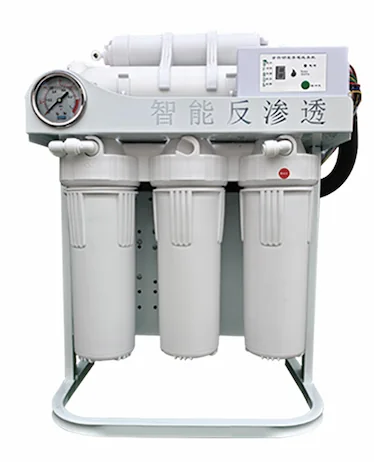
Máy lọc nước RO dạng khung 10-Inch 400G-1200G
- Hạng mục
- Thông số
- Loại sản phẩm
- Máy lọc nước RO dạng khung 10-Inch 400G-1200G
- Chế độ vận hành
- Vận hành thông minh hoàn toàn tự động, được điều khiển bằng vi máy tính
Máy lọc nước RO OEM/ODM bao gồm loại có bình chứa tích hợp, loại lắp dưới bồn rửa, hệ thống tùy chỉnh 5/6/7 cấp lọc và máy RO công nghiệp. Các tùy chọn gồm đồng hồ áp suất, giá đỡ, tấm lưng, bồn tiền xử lý, màng, lõi lọc, van và bao bì.
So sánh các model được liệt kê và mở trang chi tiết. Các bản ghi model được tính riêng với các kích thước có thể tùy chỉnh; mức độ phù hợp phải được xác nhận cho dự án của bạn.


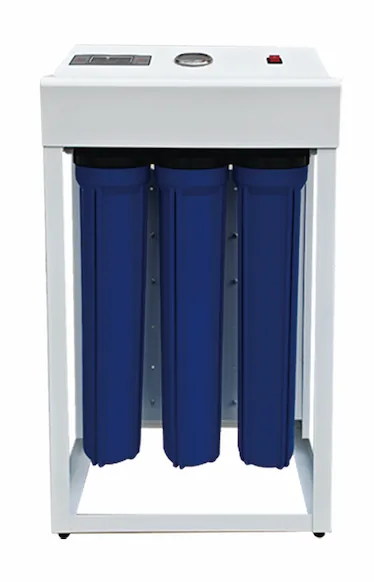

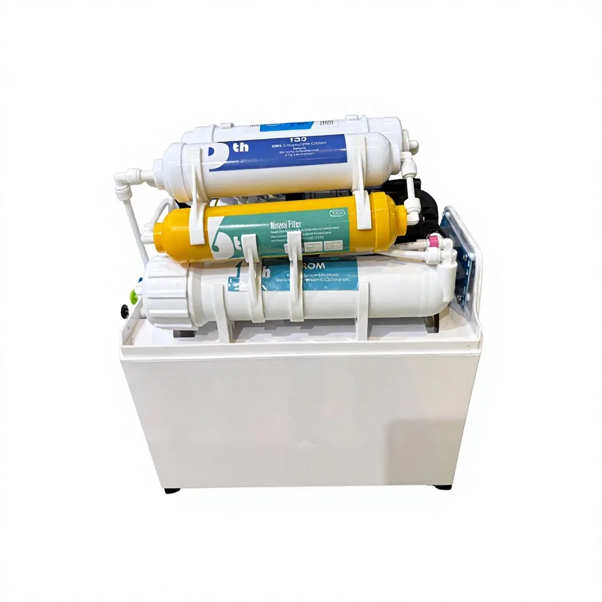


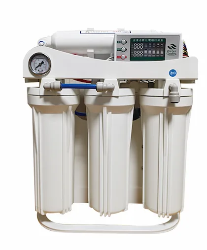
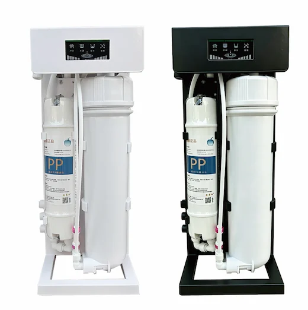
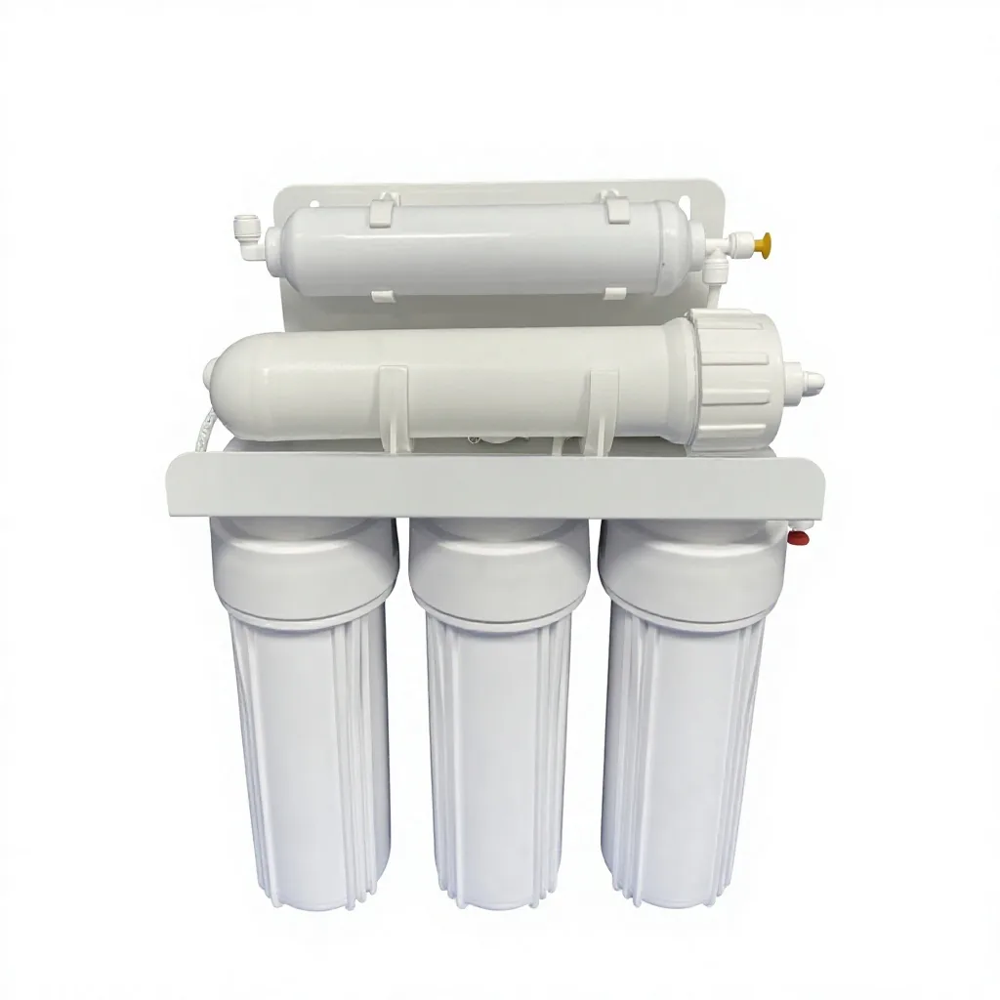
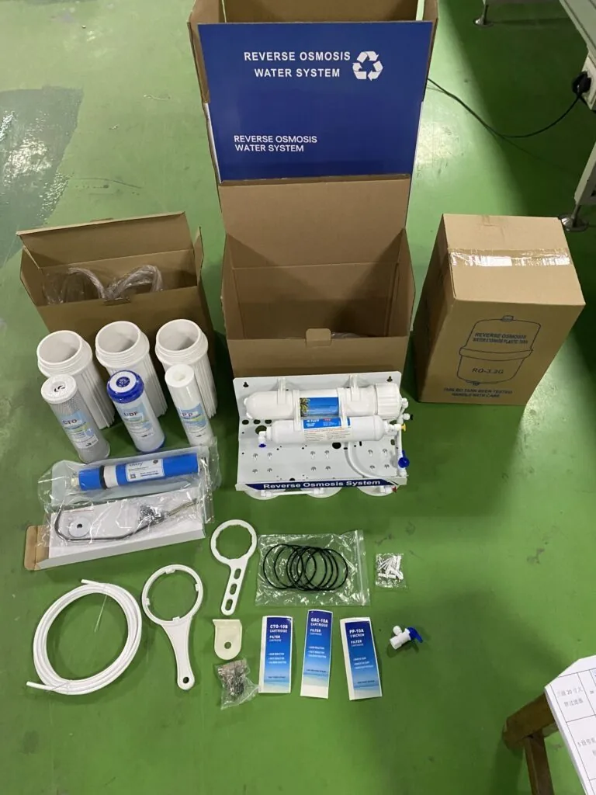

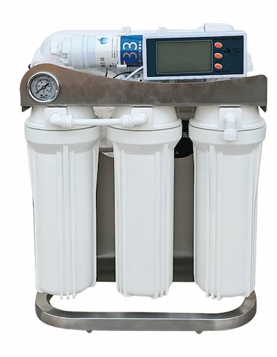
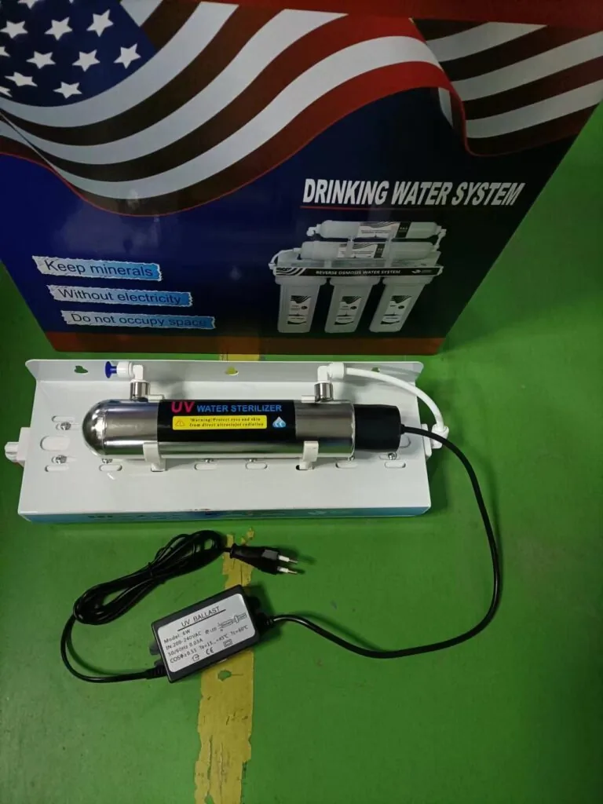

Máy lọc nước RO kết hợp các cấp lọc cặn, than hoạt tính, màng thẩm thấu ngược và lọc hoàn thiện để tạo thành hệ thống nước uống phục vụ hộ gia đình và các cơ sở kinh doanh quy mô nhỏ. Yuchen Water sản xuất hệ thống RO nhỏ gọn, cấu hình tùy chỉnh 5/6/7 cấp lọc và lõi lọc thay thế phù hợp cho các bộ phận tìm nguồn cung sản phẩm mang nhãn hiệu riêng.
Nhóm sản phẩm này phù hợp với hệ thống lắp dưới bồn rửa nhà bếp, căn hộ, khu bếp tại văn phòng, danh mục sản phẩm của các thương hiệu thiết bị gia dụng, chương trình cung cấp sản phẩm thay thế của nhà phân phối và các dự án máy RO công nghiệp quy mô lớn hơn. Người mua có thể chọn thiết kế có bình chứa tích hợp, cấu hình lắp dưới bồn rửa truyền thống, hệ thống 5/6/7 cấp lọc, một hoặc hai đồng hồ áp suất, giá đỡ nhựa, giá đỡ có màu, tấm lưng đơn giản hoặc hệ thống RO thiết kế theo dự án có bồn tiền xử lý.
| Các loại hệ thống | Hệ thống có bình chứa tích hợp, hệ thống RO lắp dưới bồn rửa, hệ thống giá đỡ/tấm lưng tùy chỉnh và máy RO công nghiệp |
|---|---|
| Số cấp | Các tùy chọn 5 cấp, 6 cấp và 7 cấp, cùng phương án bố trí hệ thống tiền xử lý và giá lắp màng RO theo từng dự án |
| Màng | Các tùy chọn từ 50 đến 400 GPD cho hệ thống thiết bị; lựa chọn màng công nghiệp theo công suất dự án |
| Ứng dụng | Nhà ở, căn hộ, văn phòng, các dòng sản phẩm của thương hiệu thiết bị gia dụng, xử lý nước thương mại và các dự án RO công nghiệp |
| Tùy chọn OEM | Tấm ốp, vòi, bộ lõi lọc, đồng hồ áp suất, màu giá đỡ, số lượng bồn tiền xử lý, thương hiệu van, nhãn và thùng carton |
Hỗ trợ OEM bao gồm hình dáng tủ máy, tấm mặt trước, số cấp lọc, thứ tự lõi lọc, một hoặc hai đồng hồ áp suất, kiểu giá đỡ/tấm lưng, vòi, bơm, công suất danh định của màng tính bằng GPD, hướng dẫn sử dụng, nhãn và thiết kế đồ họa trên thùng carton. Có thể trao đổi kỹ thuật về các dự án cần khuôn mới hoặc cần đáp ứng yêu cầu tuân thủ tại địa phương.
Lựa chọn mẫu máy lọc nước thẩm thấu ngược theo kiểu lắp đặt, công suất màng, thiết kế bình chứa, yêu cầu về bơm, chức năng hiển thị TDS, chức năng nhắc nhở về tuổi thọ lõi lọc và kế hoạch thay thế lõi lọc. Các truy vấn tìm kiếm cụ thể như hệ thống RO lắp dưới bồn rửa, máy lọc nước RO không dùng bơm và máy lọc nước RO thông minh 400G-1200G nên dẫn người mua đến trang sản phẩm phù hợp.
Máy lọc nước RO thông minh 400G-1200G — Ứng dụng: Lắp đặt dưới bồn rửa hoặc trên mặt bàn.
Gửi yêu cầu
Máy lọc nước RO có bình áp tích hợp 100G/200G — Bình chứa: Bình áp tích hợp.
Gửi yêu cầu
Máy lọc nước RO dạng tủ có thể cấu hình với năm hoặc sáu cấp lọc, UV tùy chọn và hỗ trợ cho dự án OEM/ODM.
Xem sản phẩm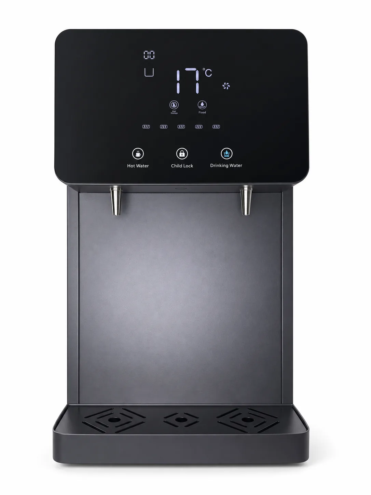
Máy lọc nước RO để bàn làm lạnh bằng máy nén 100G — Quy trình xử lý: Lọc bốn cấp: PP + CTO + T33 + RO, với công suất RO 100G.
Gửi yêu cầu
Nhà sản xuất OEM/ODM máy lọc nước RO 5/6/7 cấp tùy chỉnh — Kích thước: Tùy chỉnh theo giá đỡ, tấm lưng và cấu hình các cấp lọc.
Gửi yêu cầu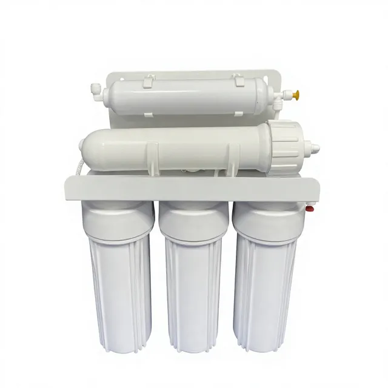
Máy lọc nước RO năm cấp lọc không dùng bơm — Thiết bị thẩm thấu ngược năm cấp lọc không dùng điện dành cho các thị trường có áp suất nước đầu vào từ hệ thống cấp nước đô thị ổn định.
Gửi yêu cầu
Máy cấp nước RO bằng thép không gỉ dùng cho mục đích thương mại E900-K27 — Kích thước: 800 x 480 x 1520 mm; Bình chứa nước nóng: 27L.
Gửi yêu cầu
Nhà sản xuất thiết bị khử muối nước biển bằng RO và máy RO công nghiệp — Vật liệu: Khung thép không gỉ, bồn FRP hoặc thép không gỉ, đường ống PVC, vỏ màng RO và các bộ phận điều khiển công nghiệp.
Gửi yêu cầuMáy lọc nước thẩm thấu ngược lắp dưới bồn rửa — Màng: RO 75GPD.
Gửi yêu cầu

Lõi lọc than hoạt tính gáo dừa T33 ren trong sử dụng lõi lọc lắp trực tiếp trên đường ống có ren trong. Lõi sử dụng than hoạt tính gáo dừa.
Gửi yêu cầuMáy lọc nước RO dạng khung 10-Inch 400G-1200G — Lưu lượng nước tinh khiết: 400G-1200G.
Gửi yêu cầu
Loại sản phẩm: Máy lọc nước RO dạng khung 10-Inch 400G-800G.
Gửi yêu cầu
Máy lọc nước RO thương mại 20-inch 800G/1200G/1600G/2000G — Các cấp lọc: Lọc năm cấp với lõi lọc cặn PP, lõi than trước màng, màng RO, lõi than sau màng hoặc trình tự lõi lọc tùy chỉnh.
Gửi yêu cầuMáy lọc nước RO dạng khung 20-Inch 400G-1200G — Lưu lượng nước tinh khiết: 400G-1200G.
Gửi yêu cầu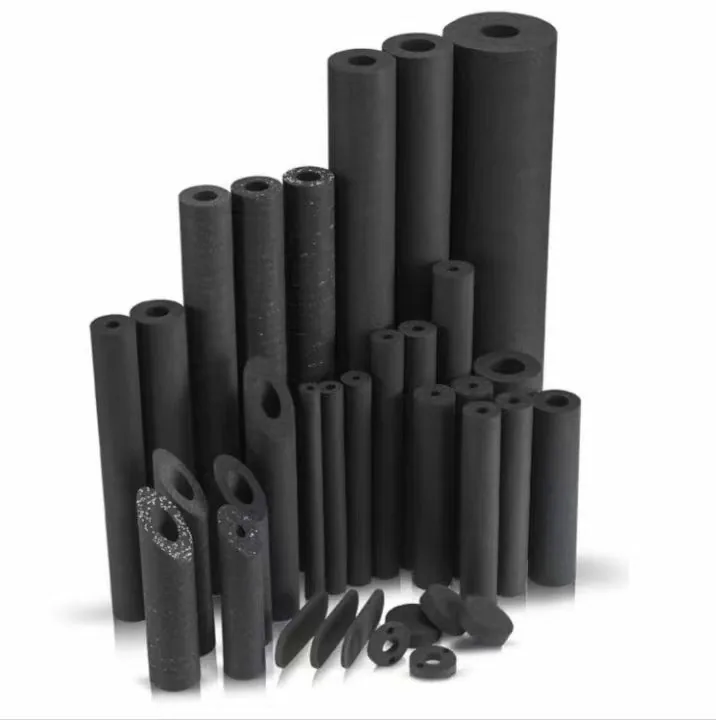
Lõi lọc than khối CTO công nghiệp lưu lượng cao — Ngành: Công nghiệp.
Gửi yêu cầu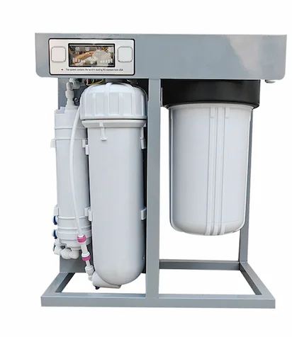
Máy lọc nước RO Big Blue dùng cho hoạt động thương mại 400G-800G — Quy trình xử lý: Lõi tiền lọc PP Big Blue 10-inch + RO + T33.
Gửi yêu cầu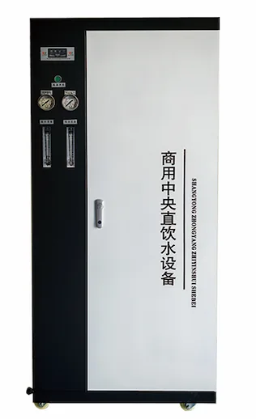
Thiết bị lọc nước RO trung tâm dùng cho mục đích thương mại 250-500 L/h — Quy trình xử lý: lõi PP 20-inch + lõi CTO 20-inch + lõi PP 20-inch + RO.
Gửi yêu cầu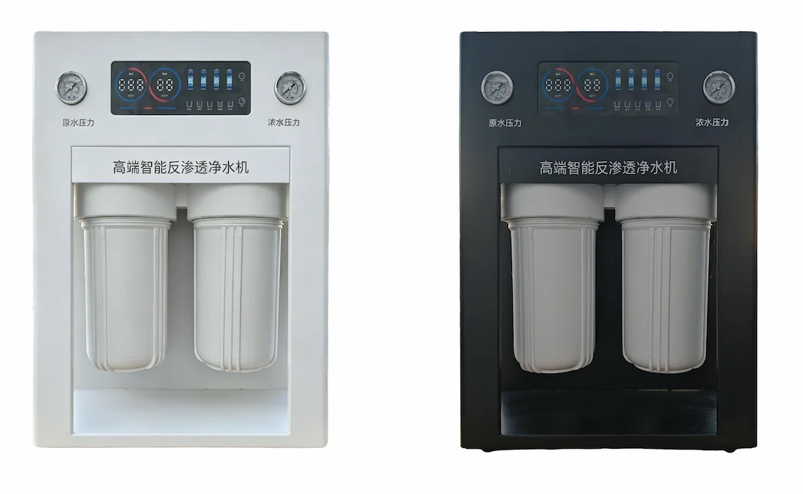
Máy lọc nước RO Big Blue cao cấp, lưu lượng lớn, dùng cho hoạt động thương mại 800G-1600G — Quy trình xử lý: Lõi PP đường kính lớn 10-inch + lõi lọc composite bông–than đường kính lớn 10-inch + RO×2.
Gửi yêu cầu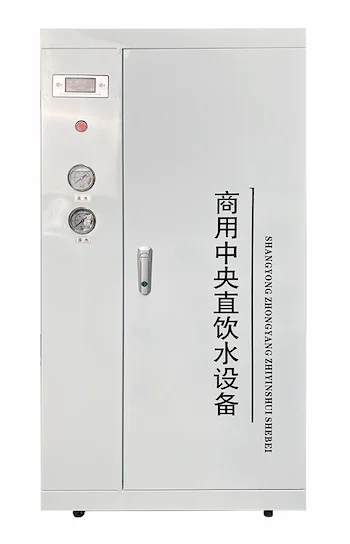
Máy lọc nước RO thương mại dạng tủ cỡ vừa có bình áp tích hợp 400G-1600G — Lưu lượng nước tinh khiết: 400G-1600G.
Gửi yêu cầu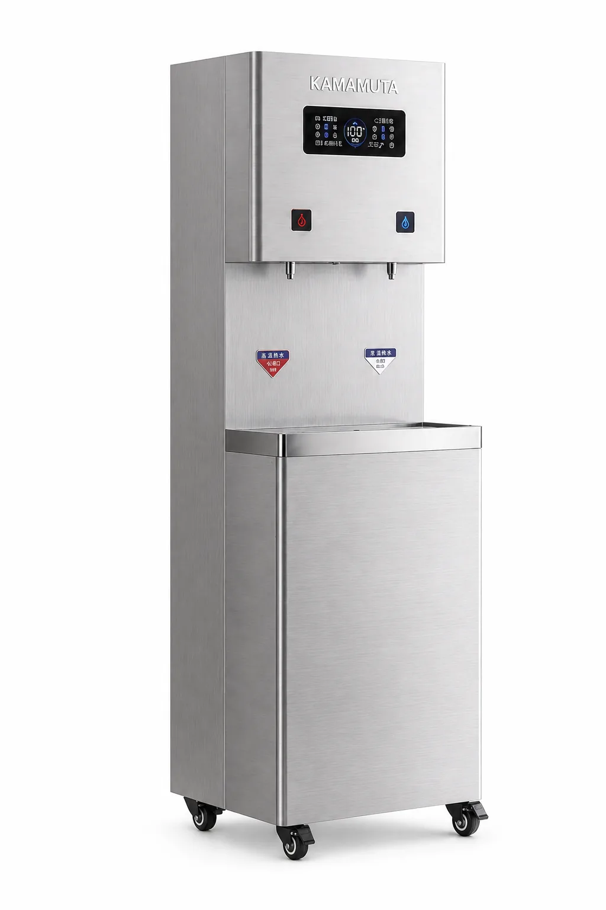
E600-S — Máy cấp nước RO dùng cho mục đích thương mại — Có phiên bản có hoặc không có hệ thống thanh toán — Vật liệu vỏ máy: Thép mạ kẽm và kính cường lực.
Gửi yêu cầu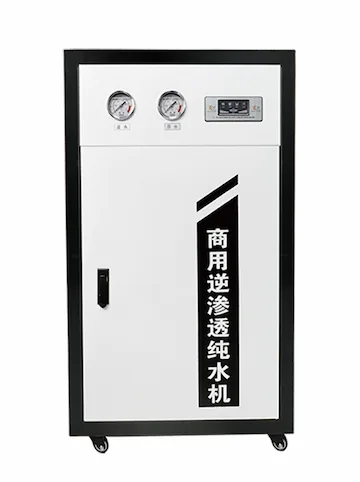
Máy lọc nước RO thương mại dạng tủ nhỏ 400G-1600G — Lưu lượng nước tinh khiết: 400G-1600G.
Gửi yêu cầu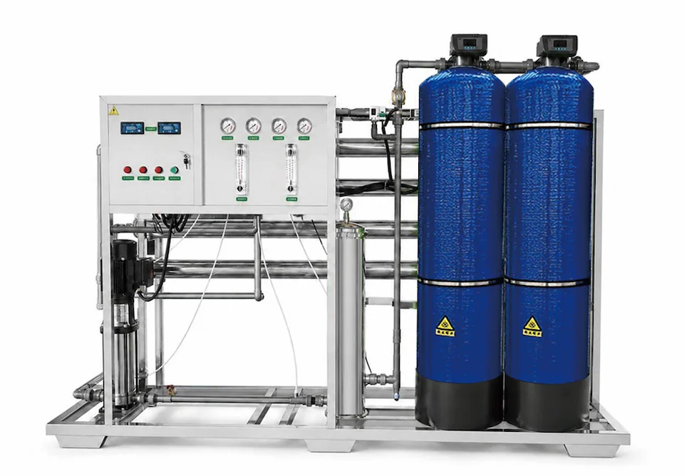
Thiết bị RO tích hợp trên khung skid với cụm tiền xử lý hai bồn 1000-3000 L/h — Lưu lượng nước tinh khiết: 1000-3000 L/h.
Gửi yêu cầu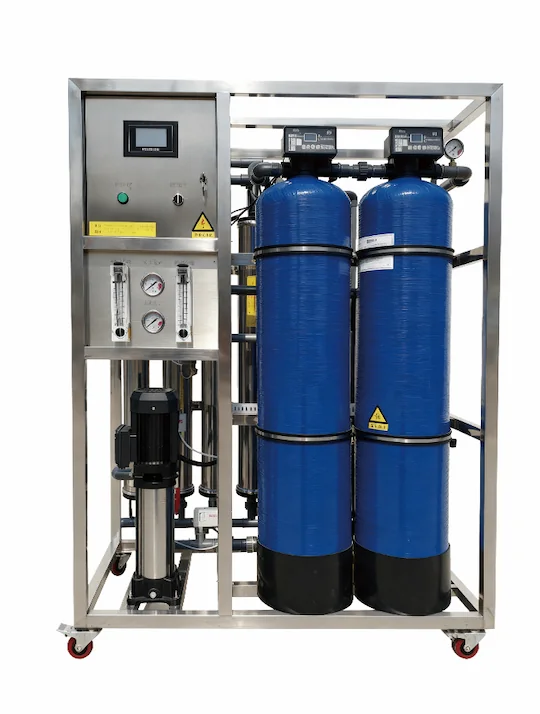
Thiết bị thẩm thấu ngược với hai bồn tiền xử lý 250-1000 L/h — Ứng dụng: Khách sạn, xưởng sản xuất, trường học, phòng khám, bếp thương mại, tiền xử lý nước ngầm và các dự án lọc nước có thiết kế nhỏ gọn.
Gửi yêu cầu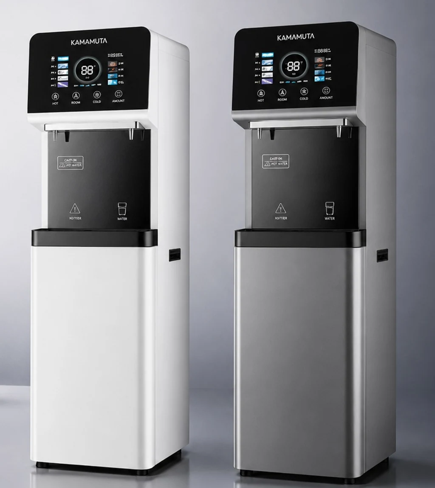
E600-S-Min — Máy cấp nước RO dùng cho mục đích thương mại — Lưu lượng nước đã lọc: 0.26 L/min hoặc 1.05 L/min tùy theo cấu hình RO.
Gửi yêu cầu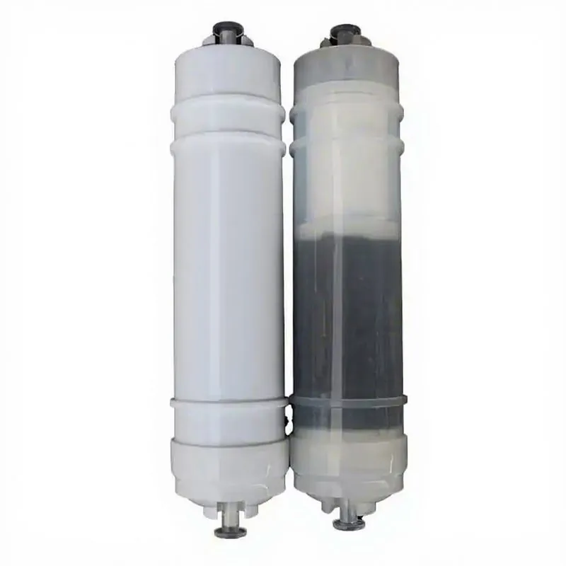
Bộ lõi lọc kết hợp nhiều cấp — Cấu hình kết hợp: Theo yêu cầu.
Gửi yêu cầuLoại sản phẩm: Máy lọc nước RO dạng khung có tấm mặt trước 10-Inch 400G-800G.
Gửi yêu cầu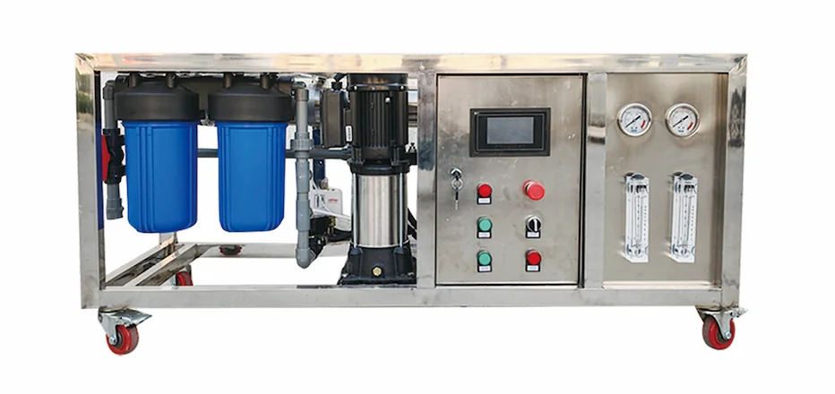
Thiết bị lọc nước thẩm thấu ngược bố trí nằm ngang 250 L/h — Lưu lượng nước tinh khiết: 250 L/h.
Gửi yêu cầu
Thiết bị xử lý nước thẩm thấu ngược công nghiệp quy mô lớn 3-100 TPH — Lưu lượng nước tinh khiết: 3-100 t/h.
Gửi yêu cầuMáy lọc nước RO di động tùy chỉnh 400G-800G — Quy trình xử lý: Lõi lọc cặn PP nối nhanh tích hợp + màng RO 3013.
Gửi yêu cầu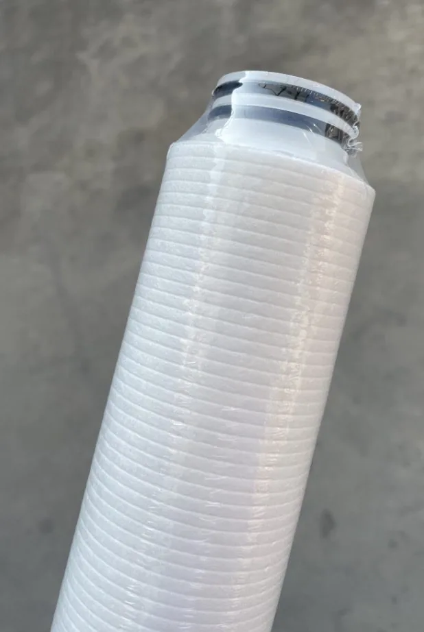
Lõi lọc cặn PP thổi nóng chảy công nghiệp (SOE/DOE) — Ngành: Công nghiệp.
Gửi yêu cầu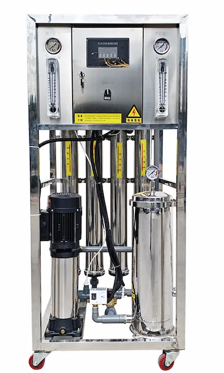
Thiết bị lọc nước RO với bộ lọc tinh 250-1000 L/h — Quy trình xử lý: Bộ lọc tinh + RO.
Gửi yêu cầu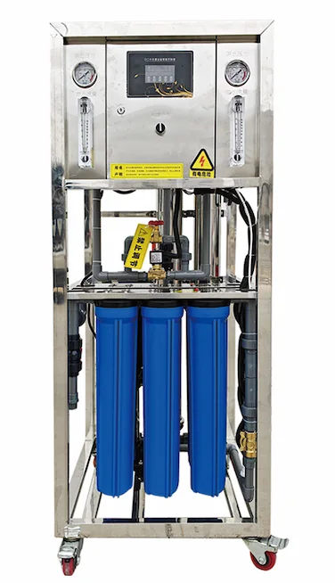
Thiết bị lọc nước thẩm thấu ngược kiểu đơn giản 250-1000 L/h — Quy trình xử lý: PP 20-inch + CTO 20-inch + PP 20-inch + RO.
Gửi yêu cầu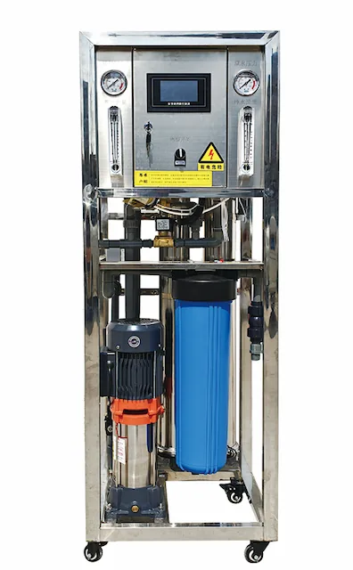
Thiết bị lọc nước thẩm thấu ngược PP Big Blue 20-Inch một bình 250-500 L/h — Quy trình xử lý: Lõi tiền lọc PP Big Blue 20-inch + RO.
Gửi yêu cầu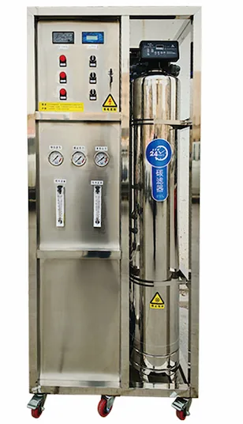
Thiết bị lọc và cấp nước RO tích hợp dạng một bồn 250-500 L/h — Quy trình xử lý: Bơm nước đầu vào + bồn lọc cát-than tự động + PP 20-inch + RO + bồn chứa nước tinh khiết bằng thép không gỉ + hệ thống cấp nước điều khiển bằng biến tần.
Gửi yêu cầu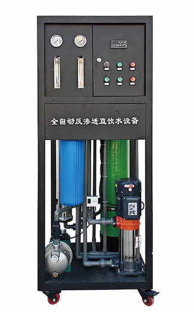
Thiết bị lọc nước thẩm thấu ngược với một bồn tiền xử lý 250-500 L/h — Quy trình xử lý: Bồn lọc cát-than tự động + PP 20-inch + PP 20-inch + RO.
Gửi yêu cầu
Thiết bị thẩm thấu ngược có sáu cốc lọc và bồn chứa nước tinh khiết 250-1000 L/h — Quy trình xử lý: PP 20″ + CTO 20″ + PP 20″ + RO.
Gửi yêu cầu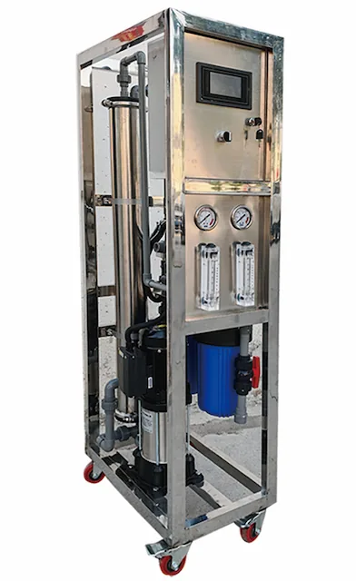
Thiết bị lọc nước thẩm thấu ngược thiết kế mỏng gọn 250-500 L/h — Quy trình xử lý: lõi lọc bông PP + lõi lọc than hoạt tính + RO.
Gửi yêu cầu
Thiết bị RO khử mặn nước biển quy mô nhỏ và vừa — Tỷ lệ loại bỏ nitrat: ≥90%.
Gửi yêu cầuLoại sản phẩm: Máy lọc nước RO dạng khung bằng thép không gỉ tăng độ dày 10-Inch 400G-800G.
Gửi yêu cầu
Thiết bị RO tích hợp trên bệ với ba bồn tiền xử lý 1000-3000 L/h — Lưu lượng nước tinh khiết: 1000-3000 L/h.
Gửi yêu cầu
Hệ thống RO di động SUS304 lắp trên khung skid 250-500 LPH — TDS nước cấp tham chiếu: 1000 ppm.
Gửi yêu cầuCó. Chi tiết về bao bì và ghi nhãn được xác nhận theo model và phạm vi đơn hàng.
Cung cấp model, số lượng và nơi giao hàng để nhận báo giá.